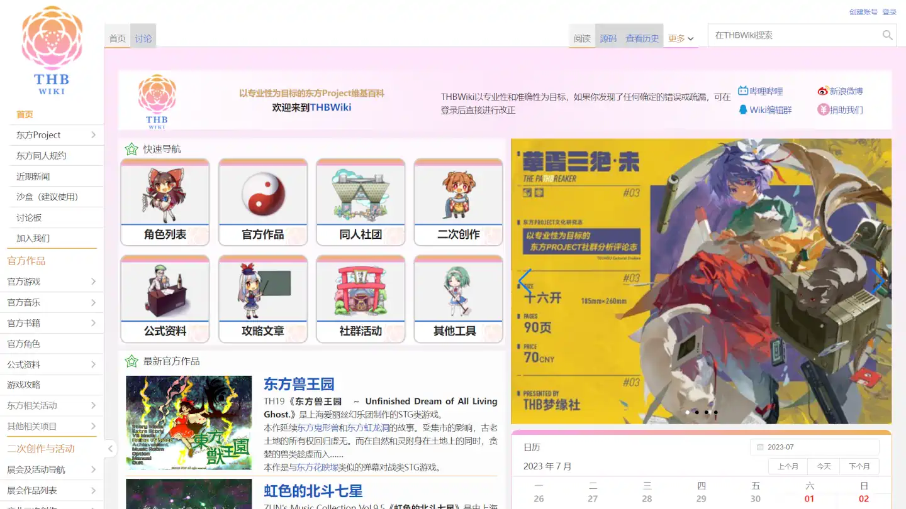
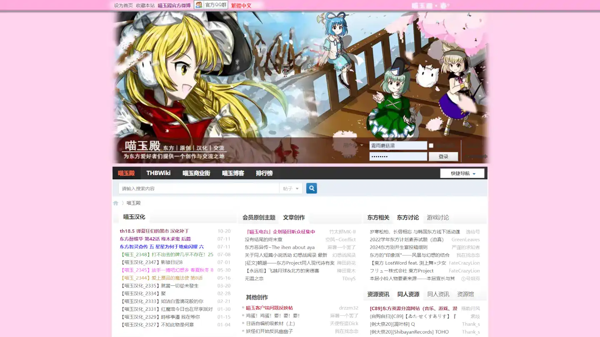
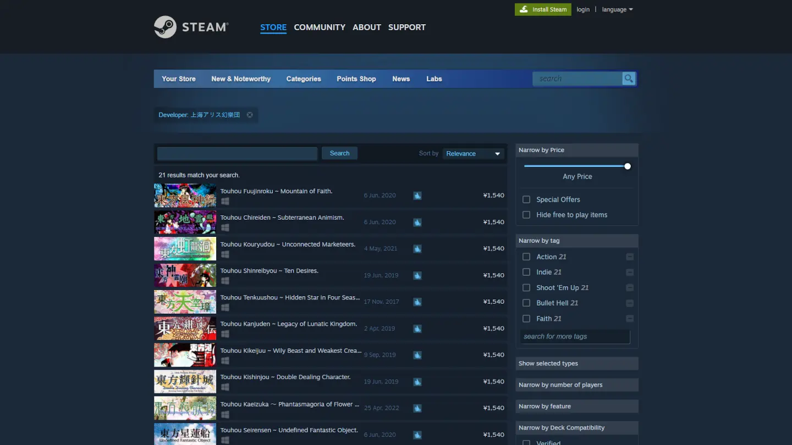
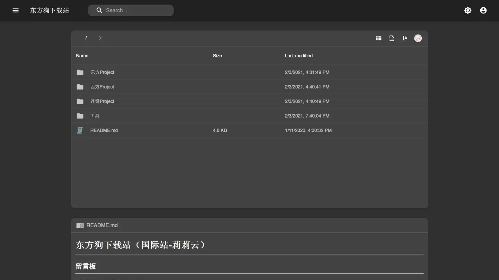
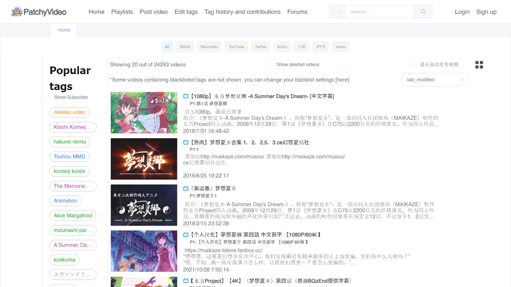
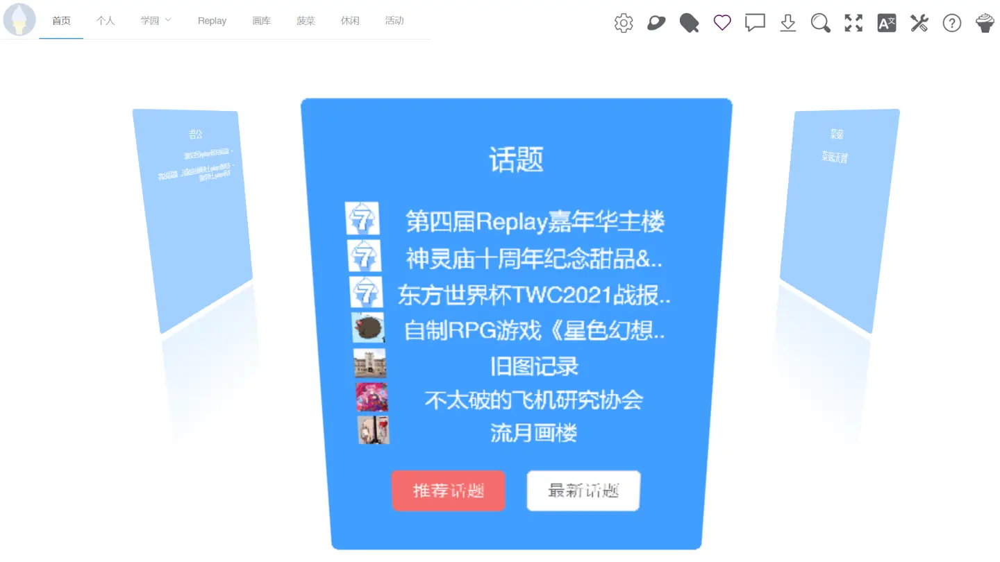

Hey there！
看样子你在偶然之中发现了咱的这本《幻想乡冲浪大手册》？
从你无意识中捡起这本神秘的手册的那一刻起，精彩的旅途便已然启程——
欢迎来到雾雨蘑菇汤的 ☆ INTERNET WORMHOLE ☆
本手册将传授给你很多对接下来你的互联网之旅十分有用的技能与工具、并与你一起周游互联网世界中的每一> 个热闹的宴会、纯粹的净土、甚至是那些连幻想都无法触及的世界！
深呼吸，系好安全带才没有这种东西！撒，就让旅途从此处开始……
🌀 传送门：
💡 帮助蘑菇汤完善这本手册？
如果屏幕前的你也碰巧知道一些有意思的地方，欢迎：
- 使用 Github Issues 进行反馈
- 加入群聊一起吹水~ （见友链）
- (￣∇￣) 私聊雾雨蘑菇汤（Telegram）~
❓ 使用须知：
使用 目录 快速跳转至对应网站分类吧
网站前的国旗代表了其对应的语言
若你的浏览器不支持某些 css 特性，导致丧失可读性（比如火狐浏览器 - 见下文），或者是单纯喜欢更加简洁的阅读体验，请 转至此处阅读！
关于火狐：火狐酱缺乏一个本网站目前大量使用的特性（css 的
:has()），再加上其他一些奇怪的地方，导致对火狐酱的完全适配超越了我的能力范围。所幸目前起码是保障了可以清楚地阅读。Sorry Firefox enjoyers :(
💌 友链
我们希望能共同维护一个纯粹友爱的环境，让所有热爱东方的人都能愉悦舒适地聊天讨论
QQ号（万一链接失效）： 339031933
露米娅归来！看博丽神社正在土崩瓦解，妖怪们出头之日已经到来！
QQ号（万一链接失效）： 733943659
此项目立志于为初入幻想乡的新人打造一本快速指南，让每个人都能快速、简洁的了解幻想乡
🧭 目录
⭐ 东方常用

东方吧维基 最好的中文东方维基

喵玉殿论坛 非常好东方论坛

Steam 正作正版购买 东方正作射击游戏正版购买

莉莉云 - 正作资源等 正作游戏资源下载站（条件允许的话还请尽量于 Steam 购买正版）


帕琪站 - 视频检索 不动的东方视频创作档案馆

甜品站 - STG 学习 成为弹幕大触之路上的不二之选
🔎 维基 / 咨询
自由、开放、平等的人类知识网络系统。
东方相关
对汉化组应该很有用 英文东方维基
资讯发布 東方我楽多叢誌
资讯发布 东方四方山新闻
东方同人曲档案馆 東方編曲録
英文东方术语对照表 为想要入英文东方圈的朋友准备
东方同人动画（班固米） 东方同人动画资讯评分条目关于班固米详见此处
萌娘百科 国内最常用的 ACG 维基注：萌百此前大改了界面，阅读体验大幅下降。上方的链接为恢复经典界面的镜像站，原官方网站可点此进入
YuC 的动画列表 新番咨询
Hpoi 手办维基 以手办模型为主要内容的周边维基
动画作画卡档案馆 SakugaBooru
ACG百科 糟糕岛维基 台湾匿名论坛 Komica（糟糕岛）的维基，可以与萌百的相辅相成
里萌百 H萌娘 从萌百分裂出来的维基，主要用以收录不适合在萌百展示的内容（NSFW）
ACG百科 NicoNico 大百科 日本的ACG百科，特别是对于了解以N站为中心的亚文化十分有用
ACG百科 Pixiv 百科事典 日本的ACG百科，在特定角色的同人创作上有时会有很有意思的信息
欧美互联网 meme 百科 Know Your Meme
网络用语词典 Urban Dictionary 📈 动画评分排名
或许是华语最权威动画评分网站
除了评分的主要功能外，动画wiki条目，讨论，用户日志中都有很多有用、有意思的内容
拥有很纯粹的社区氛围和意外很活跃的用户群体（比如说极其丰富的第三方工具）
第三方工具：
其中最有用的当属作品条目讨论、小组话题、用户日志的搜索功能了，可以搜到一些别处没有的特别有用的东西。
比班固米原生的动画评分排名更加“科学”的排名系统
动画的历史评分走向
对动画条目进行多标签搜索
11区的动画评分 ANIKORE
欧美的动画评分 AniDB 面向欧美的动画评分站其实还有My Anime List，但水分太高故不在此推荐。
🥇 排名
S1漫区投票统计 华语动画婆罗门的动画排名
A岛年度动画排名（2022） 不那么硬核的动画排名
💬 论坛
以观点为主导、平等的交流环境
东方相关
充满魔力的土地下 考据论坛从囧仙的个人博客开始，变成一个类似论坛之存在的网站。虽然囧这个人争议很多，但是这里确实有很多有意思的贴文。
不再维护更新？
欧美东方论坛 Maidens of the Kaleidoscope
台湾ACG论坛 巴哈姆特哈啦板 - 东方板块 台湾最著名的ACG网站之一，包括ACG资讯、社群，以及动画番剧等功能。
台湾 批踢踢实业坊 - 东方板块 瞎眼论坛很有意思的地方，网站使用独特的纯文字BBS模式，并基于此发展出了独特的 ANSI Art（字符画，但是有别于我们更加熟悉的Ascii Art - 若想更多了解 ANSI Art，请访问 👀 趣味 分类下的
东方 ANSI Art（批踢踢））🕶 匿名论坛（匿名板）
从A站（AcFun）分裂出来的匿名论坛，模仿日本的2ch（关于2ch的介绍请见下文）
拥有着相比大众论坛来说比较独特的规则规范，也因此维持了一个较为纯粹的社区氛围
此前A岛内部产生过一些分歧，原A岛（adnmb.com）下沉后分裂成了由三酱维护的X岛（即上述链接）与ATM维护的阿苇岛。因为ATM此前的行为我不太认可，故对阿苇岛不做推荐。
欧美的匿名论坛。按理说欧美最大匿名论坛板应该是4chan，但是这里特别推荐 Warosu，是因为其东方浓度要高上很多，而且似乎对一些欧美东方众而言有着特殊的意义。
注：上方链接的页面虽然是“御宅文化”板块，但是东方浓度很高。
K岛，仿2ch的繁体中文匿名论坛
注：K岛不同页面使用了不同域名。首页由此访问
曾经的“日本最受欢迎的网络社区，每天用户数约有1000万人，世上最大型的文字讨论板，用户每天平均建立约250万篇贴文[2]，年收入约为1亿日元”
因为持有权的纠纷，2ch 分裂成了创始人的 2ch.sc 和实际持有权拥有者的 5channel。
上面展示的链接是2ch.sc下的东方板块，浏览 5channel 的东方板块可访问此处。
Reddit，被戏称为“外国贴吧”的地方（实际上内容的丰富性和质量和氛围我个人觉得比贴吧好太多）。
因最近 Reddit 管理层频频逆天操作，诞生了更加自由开放的 Burggit，但依旧不改 Reddit 起码目前还可能是互联网最好的综合论坛的事实。
其他有趣的东方板块（Subreddit / Sub）：
r/TrueTouhou 更加偏向于原作STG讨论的 Subr/GensokyoLife 类似 r/Touhou 的东方综合 Sub（会分享很多质量不错或者很萌的同人插画）r/Fumofumo ふもふも~r/2hujerk 东方梗图、Shitposting 等等（实际上可以看作是一个规则更宽松的 r/Touhou）；同类型的还有 r/Touhoujerkr/TouhouArt 东方同人插画推荐分享 Subr/UnexpectedTouhou 发现各种奇奇怪怪地方的越共 - 或者单纯是幻视r/touhou_irl 东方，但是“我去，这根本就是我”r/touhou_yuri 百合东方r/Touhou_NSFW/ 涩涩东方（此 Sub 目前正在迁移至上面提到的 Burggit，新链接可访问此处）
爱撕衣 冻鳗婆罗门论坛
班固米小组 十分纯粹的小地方主要是阿宅们讨论生活相关和技术相关的话题。
班固米的动画条目讨论也是值得一看的地方噢
南+ 资源分享论坛对于寻找ACG资源很有用
注：各种魂+、北+、南+、白+、Lv+、夏+、春+、雪+，其实都是一个网站，只是不同的域名罢了
📺 时泪
见此处
👀 趣味
一年一度的东方角色人气投票！
不要被大势所束缚，为心中的本命投票吧！
日本的东方人气投票！ 東方Project人気投票
THFM - 随机原曲电台 东方同人音乐电台拥有切换热门 / 冷门歌曲的厉害功能
相似的还有国外的
GensokyoRadio 幻想乡电台
TOUHOU Medle 旋律 Wordle受到纽约时报的 Wordle 谜题的借鉴而诞生的游戏玩法，基于 Medle 诞生的东方Medle游戏，根据节奏猜东方原曲的旋律，可以用来测试自己对东方曲的熟悉程度w
在编写这条介绍的时候，似乎网站已经关停了…… 在 github 翻阅了一圈后，勉强发现了 SleepyAsh0191/medle 这个还算可以访问的网站，但是每日谜题在 2022/9/13 就停止更新了，所以也就是只能体验一下玩法的程度了……
另外 原版Medle 还是正常运行的哦，也是很有意思的！
👾 字符画
Ascii Art 字符画，在那个大多数论坛还不能发图的时代流行起来的艺术形式
类似 Ascii Art，但是使用了不同的文本格式，因为支持多种文字前景色与背景色而比起 Ascii Art 更加灵活，比较有代表性的应该是批踢踢上的 ANSI art
字符字生成器 汉字 Ascii Art 生成器基于字符的像素点阵图生成的AA，因此理论上可以支持除了emoji以外任何你电脑可以渲染的字符
ASCII Text Art Generator 只支持罗马字符，但是拥有很多字体的AA生成器
ASCII Art Generator 图片转AA不过最具有灵魂的AA肯定还是手动创作的AA啦
可爱小老帝
,.—､ __ ,' !──‐─,‘ ヽ /' ,ﾍ |::::ﾉ ＼ ／ /:::::::::', ', 〈 /::/‐/ ｉ L:! | ヽ__,ｲ 7ｲ`ﾄ ﾚ'ｧ/\ /:| !〈:iゞ’ ´i_r八ゝ—'::! ):入" . ,,〈:/:::λ /ヽﾚヽ､_ _,イ::ﾉ:/ |k_７_ﾚヽ, /i〈|/ i ﾍ / / i： ﾍ! `、 ! >､ 八 , ﾍ _/、 `/｀T ´、＼`7ｰ-’ ヽL__|__|_,-ン ﾄ、/ |__／ ｰ-` !_/
CHEEEEEEEEEEEEEEEEEEEEEEEEN *Honk Honk*
NEAL.FUN 脑洞大开的页游系列
The Password Game 密码游戏
Let's Settle This 让我们解决这个争论
Share This Page 分享本页面
Project Sekai stickers 啤酒烧烤表情生成打开他，将会收获大量 Ciallo～(∠・ω< )⌒☆
点击他，你会收获大量 Ciallo～(∠・ω< )⌒☆
摸摸他，你会收获大量 Ciallo～(∠・ω< )⌒☆
AIDN 神经病网页工具游戏
Nyan Cat Crazy 越来越疯狂的彩虹猫
Nobasu 拉——长————！
Ugomoji 抖动字
Bokete 日式沙雕配文


🔑 工具 / 资源
东方相关
Touhou Toolkit 东方拆包工具
Moriya Shrine 东方英文资源站
梦璃 东方同人游戏资源有经济能力的话还请尽量支持正版
Flysheep 东方同人游戏资源同上
ACG 音乐资源网站 Hikari no Akari
正版同人作品购买站 DLsite
EL RINCÓN DEL KITSUNE NEO V家资源
Dagobah Flash 作品档案馆（☆ 笨蛋特别推荐 ☆）
uBlockOrigin 最好的去广告插件，没有之一💾 互联网的记忆
WayBackMachine 网页时光机不管是想要访问已经关停的博客站，还是单纯想要看看一些网站曾经的样子，网页时光机都能做到！
时光机需要用户主动请求存档，如果网页从未被存档那就永远消失在了过去
使用浏览器插件快速查看当前网页存档、请求存档：
Archive.Today 网页截图存档不如 WayBackMachine 那般强大，但在有些情况下也有特殊的用途。
🌊 图片相关
Pixiv ACG插画发布站相似的，但是不是ACG专业用的艺术发布站还有：
**
Safebooru 插画档案馆Booru（ボール - 图片板），对用户发布（大多数是转载）图片进行存档整理的网站形式，最主要的优点是完善的 tag 系统，方便用户针对图片分类特征进行检索。
注：Booru 站一般不是图片的原始来源，只是对图片进行归档整理的网站服务，多数 booru 站会（一般是在页面左侧）说明图片的来源。
上方的 Safebooru 为没有色情图片与广告的 booru。常用的 booru 还有：
DanBooru Danbooru 系图板的起源
Konachan 高分辨率Booru 类网站大全（或许过时）：
ImgOps 图片搜索最好的图片搜索工具，聚合了大量图片搜索服务（包括谷歌图片这种综合搜索、SauceNao这种专用搜索）
最主要的用途就是搜索网图的原图及来源
其他图片搜索引擎（包括在了 ImgOps 内 / ImgOps 基于以下服务）：
个人最常用的搜图引擎
主要原因是域名好记x，用来找ACG插画原图（pixiv / twitter）类似 SauceNao
类似 SauceNao，但是提供两种不同的以图搜图算法
Trace.moe 截图动画搜索非常强大 - 通过截图搜索来源动画（精确到集别，时间戳）
Waifu2x 图片放大基于AI的图片放大工具（主要适合ACG插画）
上述网站在服务端处理，因此上限为2倍比率；基于本地处理的 Unlimited Waifu2x 可支持到4倍比率的放大（但是更加可能会出现莫名其妙的bug）
FotoForensics PS痕迹检测使用某种黑科技探测图片上哪些地方可能被编辑过
WhatTheFont 截图字体检测检测图片中文字所使用的的字体
同类网站：
🧲 BT (磁力)
QBT-EE 客户端🏴☠️ BT资源检索引擎（综合）
🌸 动画资源
🅰 字幕
📕 电子书
🔐 网络安全
🚫 网络代理（此分类已删除）
🔎 浏览器隐私插件（主要chrome）
uBlock Origin 去广告
Decentraleyes CDN跟踪拦截
WebRTC Leak Prevent WebRTC泄露拦截
Cookie AutoDelete 自动清除 Cookie
ClearURLs 追踪参数清除🧄 TOR (洋葱网络)
🍦 涩涩
请三思而后行：
跳转